| プロメテウスの罠〔７〕 原始村に住む「津波はタブーなんだ」 (朝日新聞デジタルＳＥＬＥＣＴ) | |
| 朝日新聞 | |
| (2013) | |
原子炉の中で自然界には存在しない核物質が生まれ、処理し得ないその物質がどんどん増え続ける。それに僕自身が加担している、そのことに気づくんです――。プロメテウスの罠、第７シリーズ「原始村に住む」は、福島第一原発の元技術者を軸に原子力の周辺を見ていく。２０１２年２月に朝日新聞に掲載した連載全１５回を収録。
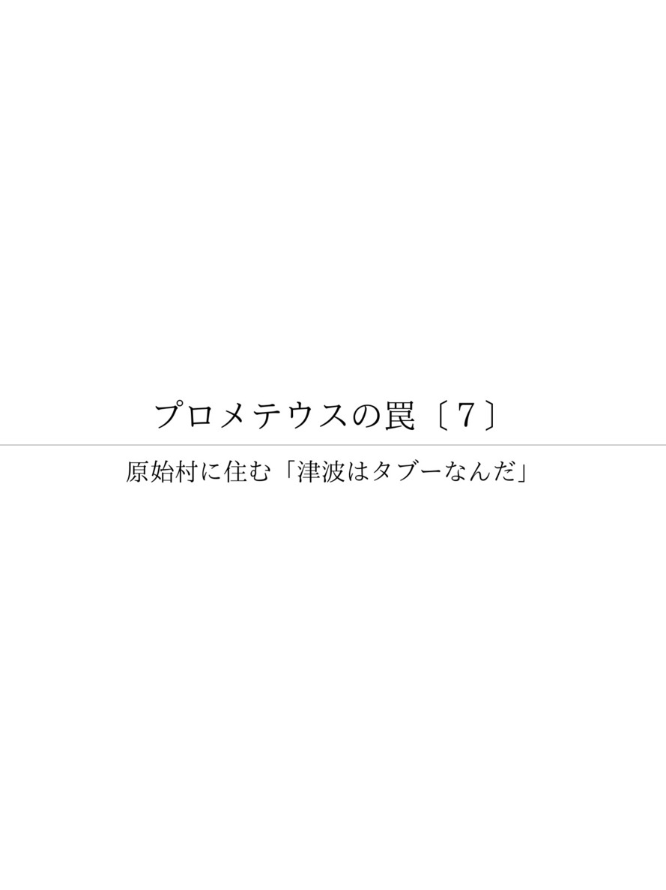
内容紹介
原子炉の中で自然界には存在しない核物質が生まれ、処理し得ないその物質がどんどん増え続ける。それに僕自身が加担している、そのことに気づくんです――。プロメテウスの罠、第７シリーズ「原始村に住む」は、福島第一原発の元技術者を軸に原子力の周辺を見ていく。２０１２年２月に朝日新聞に掲載した連載全１５回を収録。
初出
朝日新聞 二〇一二年二月七日～二十二日
第１章 考えます、いろいろ
第２章 東電の人がいるよ
第３章 ぶっちゃけよう
第４章 毒がどんどんできる
第５章 津波はタブーなんだ
第６章 検査官を丸め込む
第７章 違反ではありません
第８章 それが解釈ですので
第９章 そこは見て見ぬふり
第１０章 ６割が捨てられる
第１１章 目標 自然に還る
第１２章 火さえあれば何とか
第１３章 根源から覆された
第１４章 不便でも自由だった
第１５章 何が正しいかなんて
雪が降っていた。
山に囲まれた４ヘクタールの土地に木造の建物が点在している。葉の落ちた木々が周りを囲む。木にぶら下がったまま柿が腐っていた。
２０１２年１月初旬、福島県川内村の山中。福島第一原発から２５キロ。
「話をする人もあんまりいないんだけど、悔しいっつうかねえ。でもあんまり悔しさとかいいたくないじゃん。それも悔しくて」
風見（かざみ）正博。６１歳。東京都出身。この地に入って３５年になる。
もとの地名がバクだったので、獏原人（ばくげんじん）村と名づけた。自給自足の共同体を目指した。自分で家を建て、畑をつくり、山奥から水を引き、木を割って燃料にした。
放し飼いで鶏を飼い、自然卵を売って必要最小限の現金を得た。お金がないという点では貧しかったが、満足感があった。１１年の３月１１日、原発事故が起こるまでは。
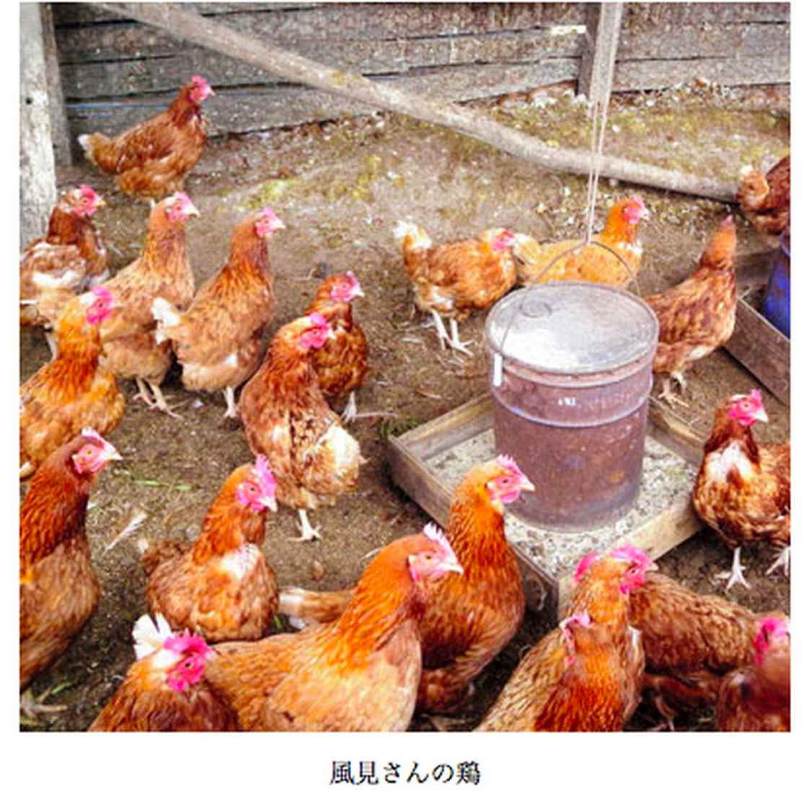
以前、ここには幼子を育てる若い一家と風見夫婦がいた。事故後、若い一家は県外に逃げ、風見の妻は隣のいわき市で暮らすようになった。
「前はね、向こうにあるもう１軒の煙突から煙がのぼるとうれしくてね。ああ、いるんだなって」
今、この地に住むのは風見１人。朝８時と午後の３時に４００羽の鶏から卵を採り、顧客の元へ運ぶ。５０軒あった契約先は半分に減った。
「全部やめられちゃってもおかしくないところだったけど、半分は残ってくれて」
１１年５月に測ったとき、卵に含まれる放射性セシウムは１キロ当たり８ベクレルだった。国の暫定基準値５００ベクレルに比べると、ずっと低い。
「卵ってあまり出ないんだよ、放射能。今はもっと少なくなっていると思う」
とはいえゼロがいいに決まっている。
「考えます、やっぱりね。いろいろね。いろいろ考える。わずかとはいえ放射能が出るものを売り続けていいのか、とかね」
放し飼いをやめ、鶏は小屋に入れたまま。えさの中心は米国産トウモロコシとスーパーの野菜だ。広い土地がありながら放し飼いできない現実。目の前の畑で取れる野沢菜を与えられない矛盾。
「自分の理想追求がめちゃくちゃになっちゃったわけね」
飄々（ひょうひょう）とした人柄。淡々とした語り口。ふっと遠くに目をやった。
「なぜここに残ってんだっていわれてもねえ。いろんな事情があって。ここの土地が好きだってのがまずあるし。しがらみがない人はさっさと遠くへ行くだろうけど......」
１０年前、そんな風見に触れて人生を変えた元原子力技術者がいる。
その男は今、はるか南の地で自給自足を目指している。
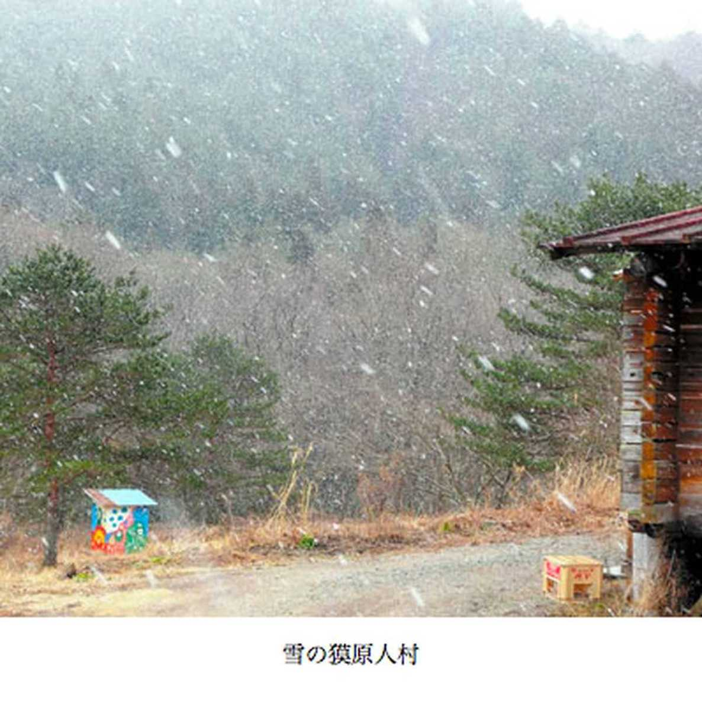
青空の下、思い思いの格好で老若男女が歩く。
ギターをかき鳴らしながら歩く者がいる。ぽんぽんぽん、打楽器をたたく者もいる。プラカードや横断幕を持って歩く者もいる。子どもの手を引く人がいる。乳母車を押す人がいる。「原発いらなーい」。そんな声がオフィス街にのびていく。
１１年の４月２９日、高知市。中土佐町矢井賀に住む染織家の宮崎朝子がネットで呼びかけると、口コミで広がって約２００人が集まった。デモというより、パレード。アーケードを楽しそうに歩いていると、ふらりと列に加わる若者たちもいた。
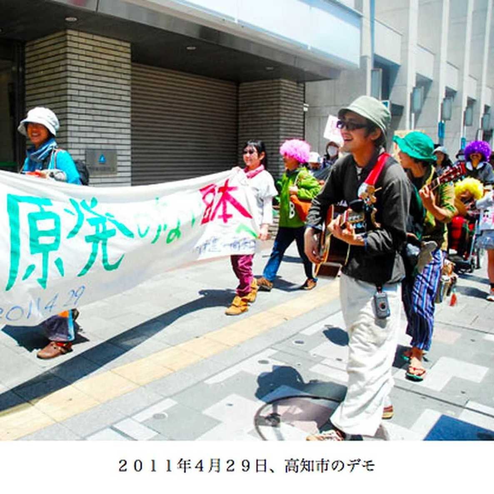
宮崎は千葉県の出身。愛媛に住んだ後、１０年前に家族で矢井賀に移り住んだ。大震災が起きた１１年３月１１日は東京都国立市の知人のマンションにいた。翌日、八千代市の実家まで６時間かけて帰る。
「駅のホームは人であふれるし、余震も多かったし。友達から放射能が危ない、雨にぬれるなとかメールが来るし。ほんとに緊張しました」
しばらく高知に帰れないんじゃないかと思ったが、予約していた１１年３月１４日の飛行機に乗れた。高知に帰り着いたとき、違和感に包まれる。
「平和で静かで、あまりにも何にもなかったかのようで」
関東の状況を知っているだけに、気持ちが落ち着かない。何かしなくては、と考えたのがデモだった。
「私はデモに参加したこともないし、だから友達２人に『デモやるから協力して』って頼んで」
デモの後で数人に話をしてもらうことにした。誰に頼もうか、と相談したとき、友達が「元東京電力の人がいるらしいよ」。じゃあその人にも話してもらおう。
依頼の電話を受けたのは四万十市に避難中の木村俊雄（４７）だった。かつて東電社員として福島第一原発の運転に携わり、退職して福島県大熊町に住んでいた。放射能に追われて隣接の田村市に逃げ、栃木県に逃げ、県営住宅開放の報道を見て友人がいる高知まで逃れてきた。
依頼を受けて木村は躊躇（ちゅうちょ）した。人前で話したら身の危険があるのではないか。なぜ自分がやらなければならないのか。迷いに迷った末、思う。話すのも意義があるかな。
デモのあと、県庁横の緑地にみんなが集まった。ベンチに座った木村がマイクを握った。気負うことなく、時に笑顔を見せながら。
「僕は福島第一原発から１５キロ真西に住んでいました」
木村俊雄（４７）は、１０年前まで福島第一原発で炉心の運転・設計業務に携わっていた。
原発は点火用のバーナーで火を付けるわけではない。点火役を担うのは、制御棒。それを引き抜くことで燃料のウランを燃えさせる。核分裂が激しくなりすぎると危険なので、そうならないように繊細に制御棒を引き抜く必要がある。
「原発を立ち上げるとき、僕たちが手順書を作っていました。百数十本の制御棒のうち、どの制御棒をどのくらい引き抜き、次はどの制御棒を抜くか。手順書は約４０ページあり、手順書通りにできるかどうか運転員の後ろについて見ているんです」
原発の立ち上げ作業があるたびに手順書は作り直す。膨大なマニュアルを厳密に守ってこそ、原発という巨大システムが計算通りに動いた。
１１年の４月２９日、高知市。デモに参加しながら、木村は集会で話す中身を迷っていた。デモの列を外れてカフェに寄り、ビールを飲んだ。観光地にもなっているひろめ市場で昼食をとったときも、カレーを食べながらビールを飲んだ。
やがて腹は固まった。「これはもう、ぶっちゃけた方がいいな」
午前のデモに続き、午後は県庁横の緑地で小集会。木村はマイクを持ち、淡々と自分の経験を話した。
原発の問題点、東京電力の体質、事故のこと。木村を囲む参加者たちは、その内容に引き込まれた。学者ではなく、東大出のエリートでもなく、木村は実際に原発の運転と付き合ってきた。原発を動かす者しか分からない世界を知っていた。
たとえば出力をごまかす裏技。
「福島第一の１号機だったら認可された熱出力は１３８０メガワットで、絶対それを超えちゃいけないんです。だから記録上の数値だけは超えないよう、僕が大型コンピューターにアクセスして係数をかける」
夏場は海水温が高いので熱出力の割に電気出力が出ない。だからぎりぎりまで熱出力を上げ、認可分を超えそうになると細工を行った、と振り返る。細工はメーカーの保守用端末から行い、「どう数字を変えたかという資料は、自分の机の引き出しの一番後ろにしまっていました」。
細工することで、打ち出される数字が認可出力以下になる。それを原子力安全・保安院に報告する。
デモを主催した宮崎朝子は、木村が話す内容に驚いた。「びっくりしました。こんな話をしていいの、みたいな......」
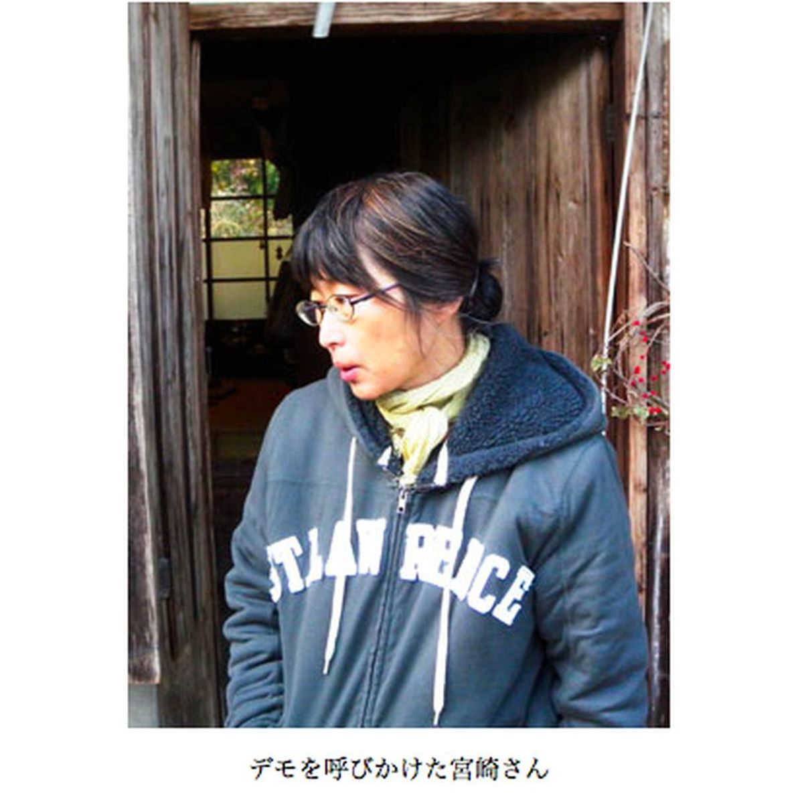
木村俊雄（４７）は福島第一原発がある福島県双葉町で生まれた。
双葉中では野球部のキャッチャーで４番。高校野球を目指し、中２になると硬球で練習をしていた。
転機は中３のときにきた。
「母一人子一人だったので、東電学園を受けてみようかな、と」
東電学園とは東京電力が運営する全寮制の学校。当時東京都日野市にあり、卒業生は東電に入った。
狭き門だった。受験条件は学校の推薦。指折りの優等生でなければならなかった。推薦をもらった木村は１２月に１次試験を受ける。１月に合格通知をもらい、２次は体力測定。公立高校の入試前に合格を決める。
「母は喜びました。当時、確か毎月約２万円が支給され、ボーナスも３万～５万円ありました。厚生年金もかけてくれました」
毎月支給されたのは給付金で、ボーナスは特別奨学金。社員になったかのような扱いだった。一学年２４０人は男ばかり。工業高校の電気科、電子科の内容に加え、２年までに発送配電の基礎知識を学んだ。最後の１年は専門コース。原発が立ち並ぶ福島に戻るつもりで、発変電科の火力・原子力コースに進んだ。
１９８３年に卒業し、東電に入社する。福島第一原発で研修した後、新潟県の柏崎刈羽原子力建設所に赴任。最初は試運転を担当し、稼働後は燃料管理グループに所属した。８９年、福島第一原発に異動する。
柏崎時代から木村はある作業を担当してきた。核物質の生成をコンピューターで計算する仕事だ。ウランの燃焼に伴い、原子炉ではさまざまな核物質が生まれる。どんな物質がどれほど発生しているか。１カ月に一度計算し、国際原子力機関（ＩＡＥＡ）と科学技術庁に報告する。
「燃料のウラン２３５と２３８に中性子が当たることで、天然には存在しない物質ができてきます。その状況を調べる必要があるんです」
福島第一原発の１号機だと燃料集合体は４００体あり、それぞれに番号が付いている。一体一体にどのくらい中性子が当たり、組成がどう変化したか、継続的に計算した。
作業を続けているうち、木村の頭に原発への最初の疑問が浮かぶ。
「プルトニウムなどの重要核種が約１０種あるんですが、その増加を目の当たりにするんです。この世に存在しないはずの毒、２万～５万年も管理しなきゃいけないような物質がどんどんできる。なんだこれ？の始まりでした」
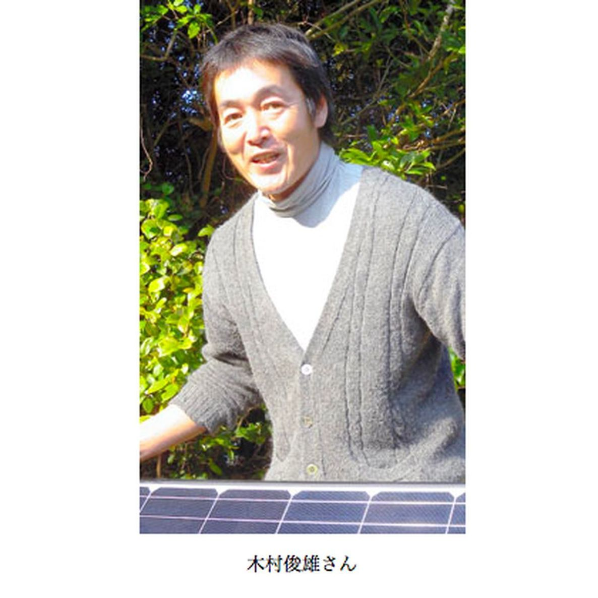
原子炉の中で自然界には存在しない核物質が生まれ、処理し得ないその物質がどんどん増え続ける。木村俊雄（４７）はやがて、こう思う。
「それに僕自身が加担している、そのことに気づくんです」
１９９１年、原発への疑問を膨らませる一つの事件が起こる。
１０月３０日、福島第一原発のタービン建屋で冷却用の海水が配管から大量に漏れた。
「補機冷却系の海水配管が腐食してタービン建屋から水漏れしたんです。地下１階に水があふれ、非常用ディーゼル発電機が使えなくなりました」
原発が水に弱いことに木村は驚き、上司に聞いた。「津波が来たら一発で炉心溶融じゃないですか」
上司はいった。
「そうなんだよ、木村君。でも安全審査で津波まで想定するのはタブー視されてるんだ」
津波を想定すると膨大なお金が要る。だから無視する、という意味。木村にとってこの上司は尊敬できる人物だった。しかも福島に来る前は本店で原発の安全審査を担当している。その人物の言葉だけに、これは木村の心に刺さった。
「津波かぶったら水は流入しますよ。そんなことに気づかないはずはないし、つまり見て見ぬふりをしている。これはもう、原発だめじゃないかって思いましたね」
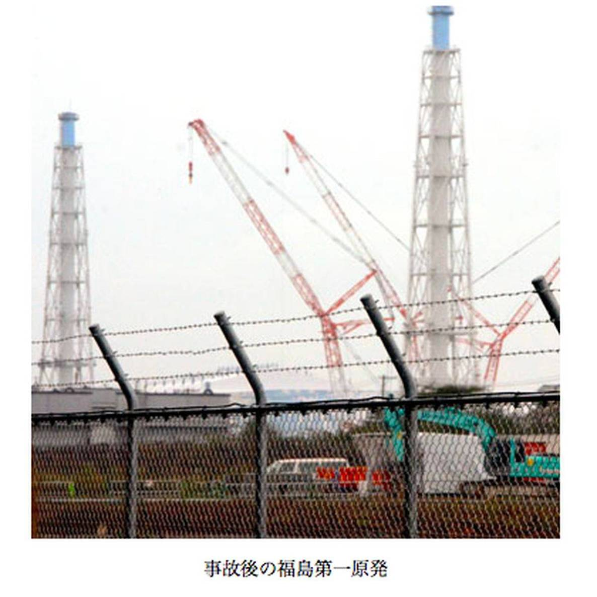
ただ、仕事にやりがいはあった。福島第一では一貫して燃焼管理班に所属した。通称、炉心屋。
当時、燃料集合体の価格は１体３千万円といわれていた。
「１本の制御棒を４体の燃料集合体が囲んでいます。炉心には４００体から８００体の燃料集合体が入っていました」
それらの燃料集合体は同質ではない。新品もあれば、１年以上も前から炉心に入れている燃料もある。一体一体組成が違う。
「定期検査時に４分の１ずつ交換するんですが、残りの燃料集合体も配置換えをします。どう配置し直すかで一体一体の燃え方が違う。うまくやると、何体かの交換時期を延ばすことができるんです」
交換数を４体減らすと１億２千万円の利益、８体だと２億４千万円の利益。配置のやりくりでそれだけの利益が上がる。
そのやりくりを担うのが約１０人の燃焼管理班。木村は１２年間にわたって所属し、最後の５年ほどは主任を務めた。
木村俊雄（４７）が東京電力を辞めて１０年になる。仕事にやりがいはあったが、原発への疑問は次々と膨らんだ。社の体質にも不信を感じた。
「虚偽報告をするんです。たとえば以前、制御棒が壊れることはたびたび起きていました。なのに、その報告は全然していません」
発表するときは「たぶんこうなんだろうということでストーリーを作っていった」と明かす。「つじつま合わせのため、本店と現場で昼夜を問わずテレビ会議をしていました」
定期検査には国の検査官が来る。東電側は想定質問集を作って打ち合わせをするのだが、質問させないやり方もあった。「ご存じとは思いますが」を木村は使った。そういわれるとそうそう質問はできない。
「検査官が素人というか、何のノウハウもないんです。工学系の大学に行って、たまたまそのセクションにいるだけ。どうやって原発を動かすのかも全然知らない。素人を丸め込むなんて簡単じゃないですか」
虚偽報告と、それをチェックできない行政側。たとえば、として木村はインターロック（安全装置）の解除をめぐる問題を例に挙げた。
「定期検査中、制御棒は１本しか抜いてはいけないことになっています。しかし東電はすべての制御棒を引き抜いていました」
木村の指摘通りのことが設置許可申請書に書いてある。燃料交換時、制御棒を２本以上引き抜こうとするとインターロックがかかる、と。原子炉１基に９７～１８５本の制御棒があるのだが、燃料交換時には１本しか抜けないようにします、ということだ。なぜ２本以上を抜いてはいけないのか。木村はいう。
「原子炉のふたが開いているときに、間違って燃料がある場所の制御棒を抜いても、それが１本なら臨界にならないからです」。いったん全制御棒を抜いて点検などをすると、制御棒を差す前に誤って燃料を入れてしまう危険性もある。
インターロックの背景にあるのはミスの重複はありうるという考え方。そのおおもとが設置許可であり、設置許可が守られていることを前提に原発が動いている、と多くの人が信じている。しかし......。
全制御棒を引き抜くために模擬信号を送ってインターロックを解除していた、国の検査官はそれを見抜けなかった、と木村は振り返る。
東電の主張や国の解釈は後で紹介するとして、もう少し木村の話を続ける。
原発には効率がつきまとう。効率次第で億単位の金が動き、発電の原価まで変わってくるからだ。
定期検査時に全制御棒を引き抜く理由も「効率を上げるためだった」と木村俊雄（４７）は説明する。
「定期検査の際、カメラを入れて炉内構造物を点検しないといけないし、中性子検出器も交換する必要がある。たとえば検出器の交換は３日くらいで終わらせたいんです」
効率を上げるためには制御棒が邪魔、という理屈。そしてもう一つ、模擬燃料置き場の問題がある。
１本の制御棒は田の字に並ぶ４体の燃料集合体に支えられていて、燃料が外されると倒れてしまう。自立の方法は、本物の燃料の代わりに同じ形状の模擬燃料を置くこと。燃料集合体の長さは約４メートルで、福島第一原発１号機ではそれを４００体、６号機では７６４体も使う。それに見合う量の模擬燃料を常時炉内に構えるとなると、置き場に困る。
効率を考えると定期検査時には制御棒を抜くしかない。全制御棒を引き抜くため、設置許可違反を承知でインターロック（安全装置）を解除していた、と木村はいう。
これに対し、東京電力はインターロックの解除を認めた上で「違反ではない」と主張する。説明は原子力運営管理部マネジャーの渡辺沖。
「インターロックを設けなさいというのはきちんと未臨界を確保しなさいということだと思います」と前置きし、「同等の管理をすることで安全上の担保をした」と渡辺はいう。つまり設置許可と同等の安全策を施したからＯＫだ、という主張。十分に安全なのだから「インターロックの除外は問題ない」「設置許可違反ではありません」と話す。
国の見解も東電を後押ししている。原子力安全・保安院の原子力発電検査課班長、今里和之は「造る」と「運用」を分けて説明する。
具体的には（１）設置許可通りのインターロックが造られていれば保安院としてはＯＫ（２）運用は保安規定に定める（３）東電がインターロックに関係するくだりを保安規定に盛り込んだのは２０００年だが、それ以前にも保安規定には「必要な制御棒が炉内に挿入されていることを確認すること」という文言がある（４）それをもって保安院としてはインターロックの解除が可能と判断した。
「必要な制御棒を挿入」は当たり前の行為。その当たり前の文言が、事実上は設置許可を超えるという解釈になる。
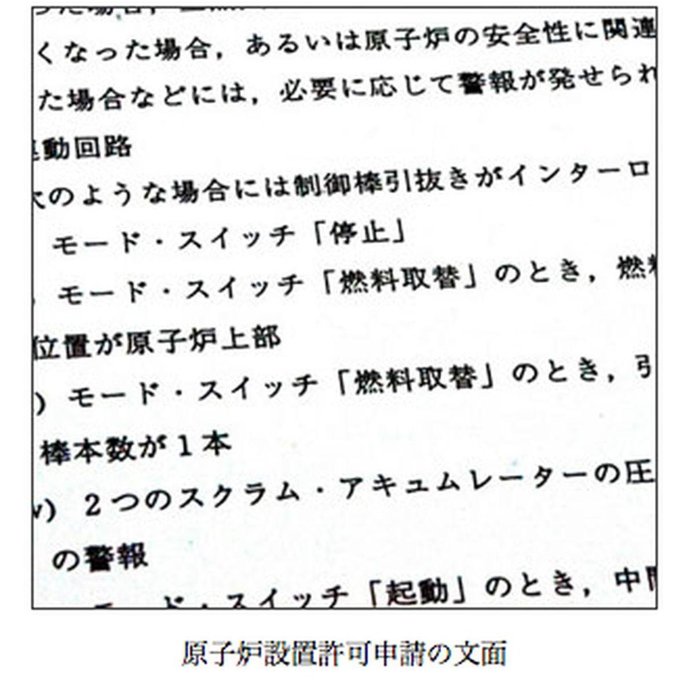
燃料交換の際、原子炉のふたは開いている。ふたが開いているときに燃料が燃えると大変なことになる。
そうならないために大事なのが制御棒の挿入であり、設置許可には燃料交換の際、複数の制御棒を引き抜けないインターロック（安全装置）を備えると明記されている。つまりインターロックを備えるという条件で原発の設置が許可されている。
しかし東京電力は燃料交換時にインターロックを解除し、全制御棒を引き抜いていた。現場にいた木村俊雄（４７）は設置許可違反を認識し、国の検査官が違反を指摘できなかったことも記憶に残った、と話す。
燃料交換時にロックを解除する、その作業が設置許可違反になるかどうか。実は国の説明は変転した。
原子力安全・保安院から何度目かの説明を受けたのは１３日の午後２時前。原子力発電検査課班長、今里和之の解説はこうだった。
「違反にはなりません。保安規定にも定めなくていいはずです。社内の手順書で定めればいい」
社外秘の社内手順書でインターロックの扱いに触れていれば設置許可に違反しない、という解釈。東電の解釈と同じだった。
その解釈で間違いないことを確認します、というので今里の電話を待った。が、かかってこないし、かけても「協議中」といわれてつながらない。やっとつながったのは７時間後。返答はこう変わっていた。
「保安規定で定めなければいけません」。つまり保安規定に記載しなければ違反、ということだ。
インターロックの解除を推測させる文言を東電が保安規定に載せたのは２０００年。ということは、それ以前は違反となるのだが......。
以下、今里とのやり取り。
少なくとも２０００年以前は保安規定にないから違反だった？
「いえ、違反ではありません。関係する条項は以前の保安規定にも入っていますから。『必要な制御棒が挿入されて』と書かれています」
「必要な制御棒を挿入」という当たり前の文言で保安規定にロックの解除を盛り込んだことになる？
「ということで認可をした、と」
インターロックの解除まで認識した上で保安規定を認可した？
「はい」
本当にその解釈でいいの？
「実際にそれが解釈ですので」
安全設備と国の解釈。両者の力関係が原発という巨大システムの一端を表している。
木村俊雄（４７）が福島第一原発にいたとき、のちに副社長となる武藤栄（６１）が上司だったことがある。
その武藤から特命を与えられた、と木村は明かす。特命の中身は、インターロック（安全装置）と全制御棒引き抜きの両立だった。
インターロックがかかっていると制御棒は１本しか抜けない。５、６年かかって木村がメーカーとつくり上げたのは、燃料が取り除かれた部分をインターロックの監視下から外すシステムだった。１本の制御棒とそれを囲む４体の燃料集合体が取り除かれたとき、その部分だけを監視下から外す。そうなると再び１本の制御棒を引き抜くことができる。そうやって次々と制御棒を抜く。
木村が「ああ、これです」と指摘する特許が申請されていた。１９９５年に出願された東芝の「定検時炉心作業監視装置」。定期検査期間の短縮が現在のインターロックでは困難、設置許可に規定されているのでロックを削除するのも困難、として発明の意義をアピールしている。武藤の命を受けて東芝と取り組んだのがこの研究だった、確か９０年代の終わりに完成させた、と木村は話す。
インターロック解除のやり方と比べると前進はした。が、「設置許可を順守できているかといえば、分からない」と木村はいう。設置許可の趣旨は制御棒を引き抜かずに燃料交換をすること、と考えるからだ。
安全と効率化はときにぶつかり合う。木村はその度、安全が犠牲にされるのを見てきた。
原発には膨大なマニュアルが存在する。半面、「厳格化できないブラックボックスがけっこうあって、そこは見て見ぬふりなんです」。
木村は給水流量計を例に挙げた。
「火力発電所だと定期的に取り外して補正します。そうしないと正しく計測できないからです。ところが原発の場合、放射能があるから外すことができない。補正ができないので正確な数値が実は分からない」
給水流量計の数値から原子炉内の熱出力が計算される。熱出力を元に４００～８００体ある燃料集合体の燃え具合が計算され、その燃え具合からプルトニウムなど各種核物質の生成状況が計算される。つまり給水流量計の数値が核物質の発生量を計算する基礎になっている。
「大本が確かじゃないと、すべてが狂ってくるんです。改善しようとしましたが、だめでした。補修部門は無頓着だし、経営もお金を出す気はなかった」
木村俊雄（４７）はいま高知県土佐清水市で家族と暮らしている。
古い民家を安く借り、屋根や床を自分で直した。電気温水器の風呂を薪（まき）風呂に改造し、居間には薪ストーブ。戸外に２３０ワットの移動式太陽光パネル２基を据え、照明や掃除機、ラジオの電気を賄っている。四国電力に払う電気代は月７００円。
「やっと落ち着いた感じですね。避難者として来て、こういう生活をさせてもらって。ほんと、感謝しないといけない」
薪ストーブの天板に鍋を置き、煮炊きはそこでする。薪は山の雑木を使う。「うちの山をきれいにしてくれ」と近所の人たちがいってくれるので、薪はいくらでもできる。
「本当に電気じゃないといけないのか、と考える時期に来ていると思います」
薪ストーブの居間。静かに音楽が流れる暖かな空間で、木村がインスタントコーヒーをいれる。床の杉板からほのかに木のにおいが立つ。
「電気にしかできないことだけを電気に、と思うんです。火力も原子力も水を温めて蒸気をつくって発電します。でも火力で３割、原子力では６割が熱エネルギーとして海に捨てられます。送電ロスを入れると、使われるのは原発で約３割です」
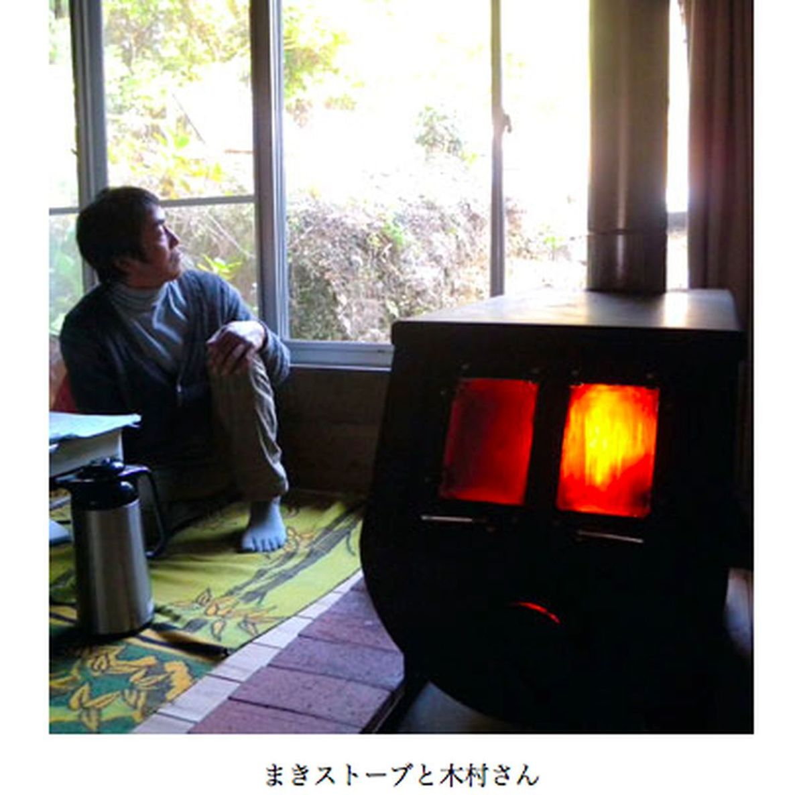
できる人ができることからやればいい、と木村はいう。だから自分もできる範囲で実践している。
「田んぼを借りたので、ことしはコメをつくります。田んぼは初めてですけど、けっこう近くの友だちが教えてくれるので。無堆肥（たいひ）、不耕起でやってみます」
畑ではナス、大根、オクラ、ジャガイモ、シシトウ、ネギ、タマネギ。近所の人に「初めてにしては上等やなあ」とほめられた。
福島では東京電力の社員というだけで羨望（せんぼう）の対象だった。地位があり、給料もよかった。
「いまはお金ないけど、人間らしい暮らしができる。人間の原点ってこういうところにあると思う」
薪ストーブや薪風呂を指して「原始力」と笑う。原子力から原始力へ。木村が大きくかじを切った背景にはある出会いがあった。
「この生き方ってのは、マサイさんに出会わなかったらなかっただろうな、と思います」
マサイというのは、福島県川内村に住む風見正博（６１）のこと。
風見たちが拓（ひら）いた獏原人（ばくげんじん）村に初めて木村が出向いたのは、１９９９年の夏だった。
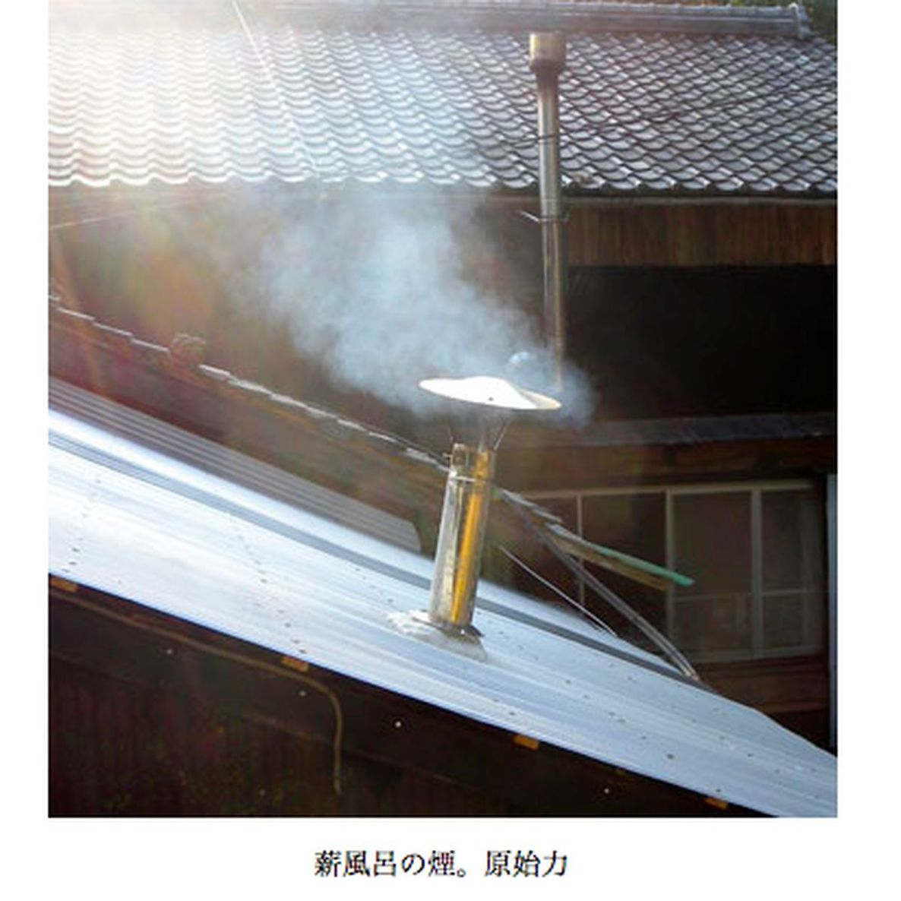
「獏原人（ばくげんじん）村の祭りに友人が連れて行ってくれたんです。すごい所があるんだよ、と」
１９９９年夏。福島県川内村に行った木村俊雄（４７）は驚いた。
風見正博（６１）の家には電気がなく、水は山から引いていた。「でもこれが楽しいんだよ」と話す顔が輝いていた。原発で働く自分とは全く逆の生き方だった。
木村は東京電力の社員だと名乗れなかった。
木村も母も、原発にどっぷりと漬かっていた。今は亡き木村の母は、当時富岡町で原発作業員相手の下宿屋を経営していた。孫請けの作業員たちは安い宿を求めていた。
「食事の質は落とせないのに、お金は安くしなきゃいけない。１泊２食で３千円でした。母は朝４時半に起きてご飯を作って。もうからない商売をやっていました」
木村は高校時代からサーフィンが好きだった。原子力の道に進んだ理由の一つも、福島の海でサーフィンをやりたいからだった。
自然が好きなのに、原発で働いている。原発にも会社にも疑問が膨らんでいる。借金まで抱えながら母も間接的に原発を支えている。
「自分の中でバランスが崩れた」と木村は振り返る。やがて会社に申し出た。「会社、辞めます」
「何で辞めるんだ」と止められた。そんな会話が何度か続き、とうとう木村は会社に行くのをやめた。
家まで来た上司が「考え直せ」と説得したが、木村は押し通した。退職は２００１年の１１月だった。
１年後、双葉町で東電時代の先輩たちと酒を飲んだ。「原発ってもうだめじゃないですか」と木村はいった。「なぜ？」と問われ、核廃棄物の処理すらできないことを挙げた。
「お前はそんな奴（やつ）だったのか、とけんか別れです。その後も町内で飲むたびに原発はもう終わりだといってたら、おかしいんだなこの人、みたいに思われて。みんなが煙たがってくるのが分かるんです」
０４年１１月、母親の下宿をたたんで人手に渡した。荷物を整理しているとき、中学卒業時に書いた色紙が出てきた。「目標 自然に還（かえ）る ｂｙルソー」と書いてあった。
瞬時に記憶が戻った。ああ、そうだ。中学の時に友だちと話してたっけ。自然の中で生きていくのって理想だよね、と。もう東電学園に入ることが決まっていたのにな。
木村の中で自然への思いが一層大きくなった。
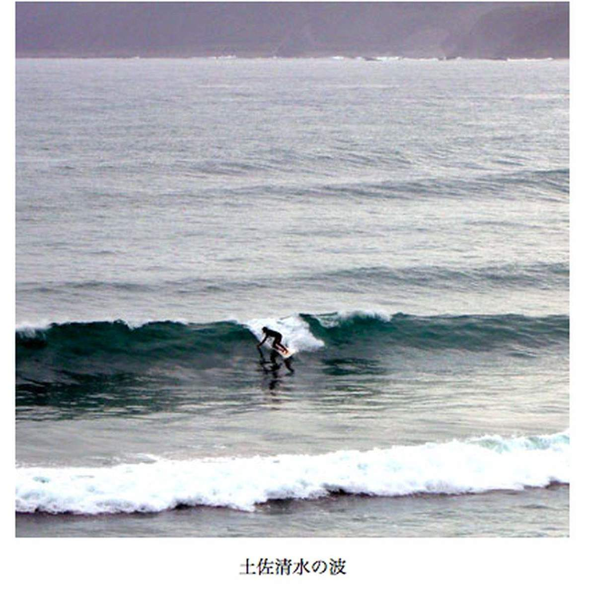
１１年３月１１日。震災が起きたとき、木村俊雄（４７）は福島県大熊町の自宅にいた。原発から１５キロ西、標高５００メートルの山中。家には薪（まき）ストーブや太陽光パネルを付けていた。風見正博（６１）の獏原人村にならい、自給自足を志していた。
その日午前、光ケーブルの工事が終わっていた。テレビが見えるようになり、ちょっと見てみようかなとスイッチを入れて５分後に大きな揺れがきた。しかし家に被害はなく、テレビを見ることもできた。
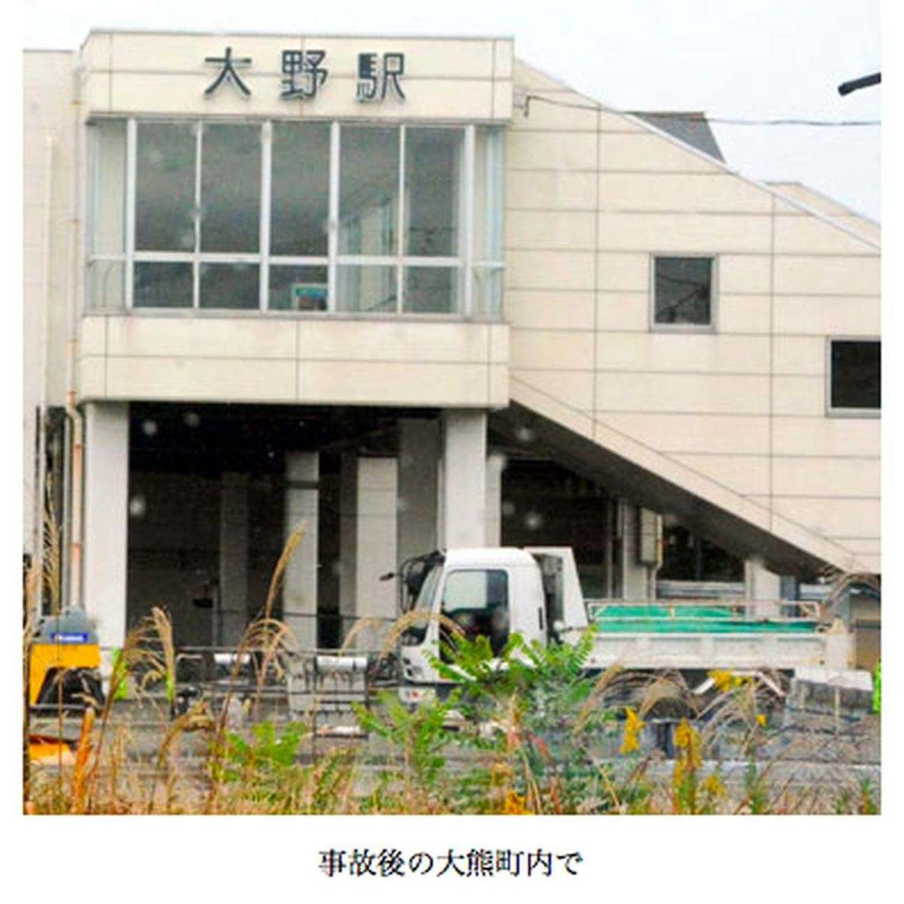
「富岡町から撮った映像だと思うんですが、テレビに津波の映像が映ったんです。原発が津波に襲われるところが。ああ、これで原発だめだな、と思いました」
木村の脳裏に１９９１年の記憶がよみがえった。津波をかぶったら原発は炉心溶融に至る。
逃げようとして、風見の言葉を思い出した。風見は言っていた。「とりあえずチェーンソーあれば生きていけるよな」と。雑木や廃材を切ることができれば燃料になるしたき火もできる。要するに、火さえ確保できれば何とかなる。午後８時、チェーンソーと斧（おの）と携行缶に入れたガソリンを持って大熊を脱出した。
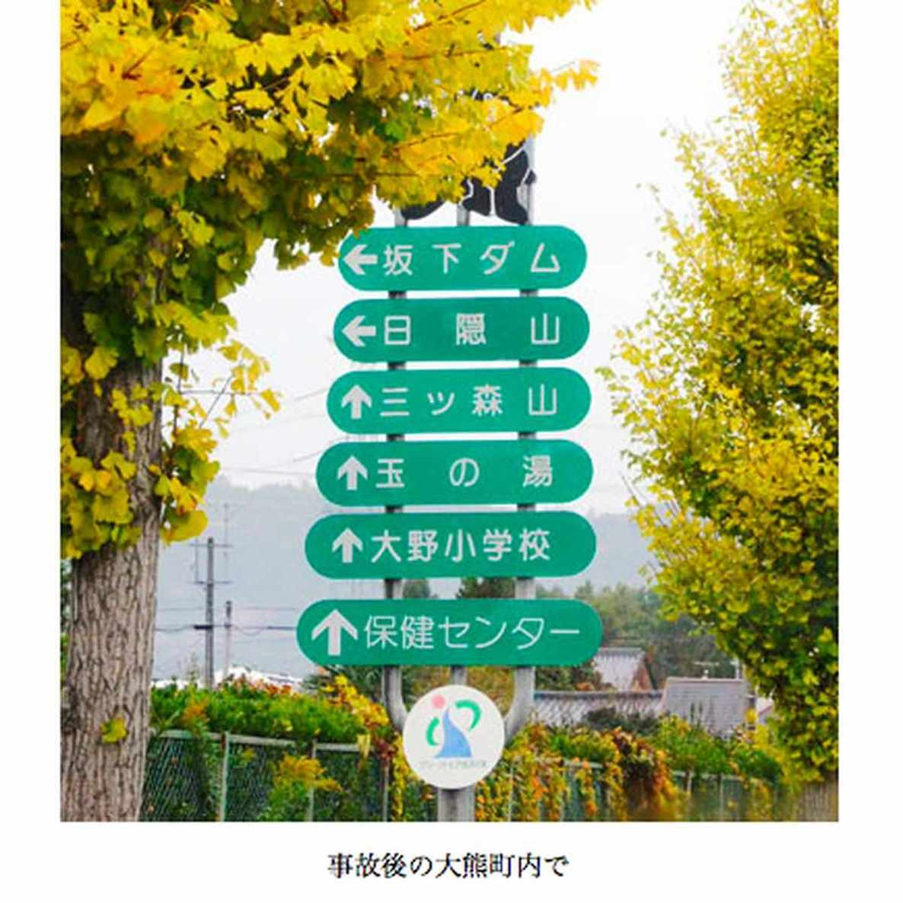
田村市の妻の実家に逃げ、１１年３月１４日に栃木。１１年４月上旬、知人のいる高知県まで逃れてきた。いま住んでいる土佐清水市には海もあり山もある。
「人情と裏表のない生活、ここにしてよかったと思います。大熊や双葉町は原発に依存している人が多いので。なんかいろんな意味で依存してて、依存し続けることで生きる力が失われていくというか......」
それがいいとか悪いとかはいえないし、原発を選択することの是非もいえない、と木村はいう。
「ただ、原発とは街の雰囲気を変えるくらい絶大な影響を持っていると思います」
双葉に生まれた木村は高校のときから東京電力一筋に歩み、就職後は原子力発電の現場で働いた。母の仕事は原発作業員相手の下宿だった。原発城下町の、東電という傘の下から、木村は木村なりに原発の存在感の大きさを見つめてきた。
大熊の隣、川内村の風見は、震災時に卵の配達で獏原人村を離れていた。戻ると家はなんともなかった。ラジオをつけて情報を聞いた。
太陽光パネルで電気はある。山から水を引いているので断水もない。「地震でもあんまり困らないんだよね」。だが、安心できたのはほんのひとときだった。
風見正博（６１）は東京都東村山市で生まれ育った。小さなころ、いじめられた記憶が残っている。
「早生まれだから、人より体がちっちゃくて。なんで人をいじめるのかな、理不尽だな、と小学生のころから考えていました」
科学少年だった。科学技術に夢を抱き、猛烈に勉強した。東大を受けようとしたが、大学紛争で入学試験はない。翌年再チャレンジしようとしたものの、結局はあきらめた。
「東大は２年分の受験生がいて合格は難しい。浪人生なので絶対に受かるところにしたい、下宿の窓から田んぼが見えるようなところがいいな、と思ったんです。熾烈（しれつ）な戦いから逃れ、癒やしを求めたんですね」
選んだのは島根大の物理学科だった。夢は膨らんだが、挫折する。
「自分でいうのもなんですけど、ギンギンに勉強して科学技術やるぞって感じで入ったんです。でも周りはのんびりしていて。自分と合わなくて、１年で退学しちゃうの」
いろいろなことを考え、疑問が浮かぶ。科学技術が生きる実感を奪っているのではないか、とか。
「都会の人は水道の水が止まったら困る。俺は水が止まったら山に行って水路のゴミどける。不便だけど、生きてるって実感がある」
生の実感を求め、１９７０年代の半ばに福島県川内村へたどり着く。山に囲まれた４ヘクタール。先に入ったグループが出た後だった。
「当時は川沿いを１時間歩かないと行けなかった。人間嫌いってわけじゃないけど、それがよかった」
お金も少しは要る、何をしようかと考えて鶏を飼った。
「卵なら軽いから運ぶのが楽だ、と考えて。えさが重いから関係なかったんだけど」
自給自足しながら妻と一緒に子ども３人を育てた。充実感があった。自分で引いた水道の蛇口から水が出る、それだけでうれしかった。
１１年の３月１１日まで、そんな生活が続いていた。
「自給自足は誰にも支配されないことだ」と信じていた。「いざとなれば山に入って生きていける」とも思っていた。が、放射能だけはどうにもならなかった。福島第一原発から２５キロ。放射線値はそう高くはないものの、一帯が汚染された。
「バブルの破綻（はたん）とかリーマン・ショックは関係ないよって言えたけど。自給自足が根源から覆されました。ある意味、生きるすべをすべて失いました」
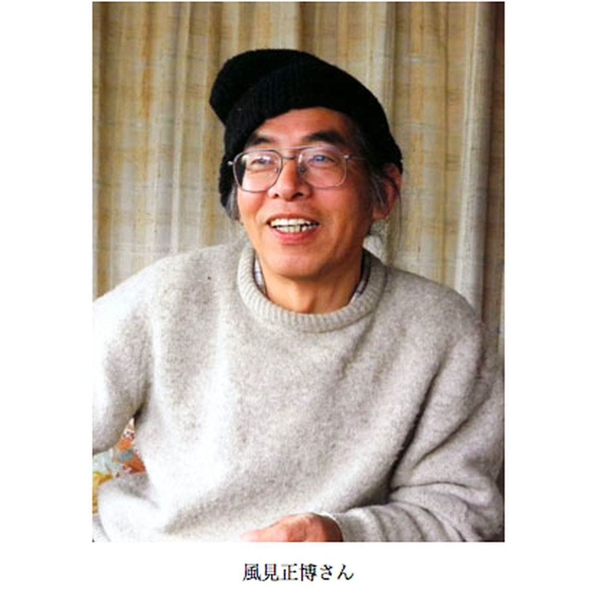
「家も自分で建てたけど、器用とか全く関係ない。俺、不器用だし。みんな思い込んでるだけなんですよ、できっこないって」
福島県川内村。獏原人村に立つ自宅で風見正博（６１）がコーヒーを口に運ぶ。薪（まき）ストーブの上にはやかんと鍋が載っている。
「住みながら家を造ったんだよ。古材をリヤカーとかで運んで。材木運ぶだけで３年かかった。いつの時代だ、みたいな話だよね」
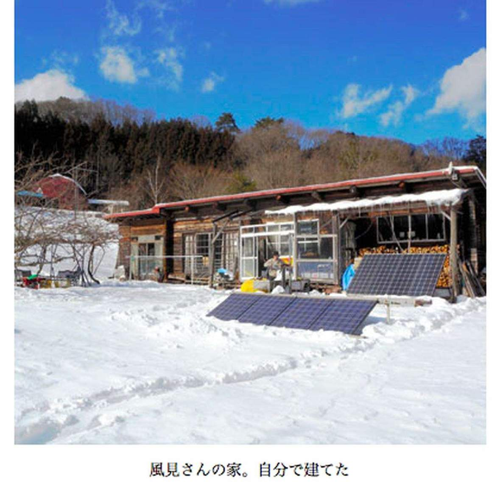
古材を運んでいたのは１９８０年ごろ。不便だったが、その不便さが充実感につながった。なにより自由だった。空気も水も食べ物もある。誰にも支配されない自由さだった。
少しずつ、暮らしは変わっていった。車が通るでこぼこ道がつき、アンテナにつなげば携帯電話も使えるようになった。以前はランプ生活だったが、いまは太陽光パネルが電気を作ってくれる。
「電気が足りないこともあるのね。そのときは使わないとか、起きてる電気に合わせて暮らしてる。だって本来は太陽に合わせて暮らしてきたわけだから」
原発事故まで、卵を売って月の収入が１０万円。酒もたばこもやらないからそれで家族が暮らしていけた。
「１５万ほしいけど１０万しか入らなくてほしい物が買えない。でもそのうち買えたりするとうれしい。１０万円しかなくても楽しそうに暮らしているのがいい」
１９８６年にチェルノブイリ原発が爆発したとき、放射能測定器を共同購入した。おそらく国はまともな発表をしない。自分たちで測ろう、と。旧式だが、とりあえず放射能の測定はできた。
１１年３月１１日、その測定器が役に立った。数値を見ながら一晩を過ごし、１２日朝に三春町へ避難した。１号機の爆発後は茨城県坂東市にある妻の実家へ。数日後、鶏にえさをやりに行きたいと思う。電話した先は木村俊雄（４７）だった。
福島第一原発の元技術者として、木村は具体的に予想を話した。大爆発する危険性はない、と聞いて風見は鶏のえさやりに川内までいったん戻る。それが１１年３月１９日だった。ワゴン車を運転し、妻と長男が同乗した。
那須、郡山と、ところどころに放射線値が高い場所があった。「遠ければ安全と思っちゃうけど、実際は全然違った」と振り返る。
鶏は元気だった。獏原人村に２時間滞在し、いわき市まで戻って持参の弁当を食べた。
１１年１１月、風見正博（６１）は福島県川内村の村議選に立候補した。
「俺、別に政治とか全然好きじゃないけど、それでも出ちゃったわけですよ。自分が当選するというよりも、既成のことに我慢できない人が投票する場所がほしいと思って。もちろん反原発を主張して」
準備の途中、弱気の虫が出る。
「人にね、出てくれないかって頼んだりして。でも自分が苦しいといって人に頼んじゃいけないなと思って、結局立候補した。街頭で演説もしたよ。もしかしたら通るかな、なんて甘い考えもあったけどね」
結果は次点。５７票だった。
「やっぱり議員やんなくてよかった。人を攻撃とかしたくないし。こういう暮らししてるのは、そういうことが嫌だからやってるんだし」
薪（まき）ストーブの上にもちを乗せ、焼けたらしょうゆにつけて食べる。
「最近、七匹の子ヤギを考えるんだよね」。オオカミの目から逃れるために７匹の子ヤギが様々な場所に隠れる。そして１匹だけが助かるお話。「逃げた時点では誰が正しい選択か分からない。今、同じ状況。何が正しいか分かんないじゃん」
残るのが正しいのか、逃げるのが正しいのか。どこに逃げるのが正しいのか。食べ物はどうか。食べるのがいいか、食べないのがいいか。
獏原人（ばくげんじん）村のほかの住民は避難し、風見は残った。風見に出会って人生を変えた福島第一原発の元技術者、木村俊雄（４７）は高知で暮らす。
東京電力を辞めて３年たった２００４年の夏から冬まで、木村は獏原人村で暮らしたことがある。朽ちかけた小屋を借り、ひとりで住んだ。そのときのことを、木村は「東電の洗脳が解けていった」と表現する。
原発がなくなると生活が維持できないのか、身の丈にあった生活を考えるべきではないか。１１年４月にはデモの後でマイクを握った。
「東北の知り合いの人たちがね、よく顔と名前を出したな、頑張れって応援してくれるんです。頑張れって言ってくれる人ばかりですね」
新生活を始めるに当たり、木村は考えた。原発の電気は買いたくないな、と。太陽光パネルを増やし、風力発電を試みて電気を自給しようと思い描いている。
（＝敬称略）
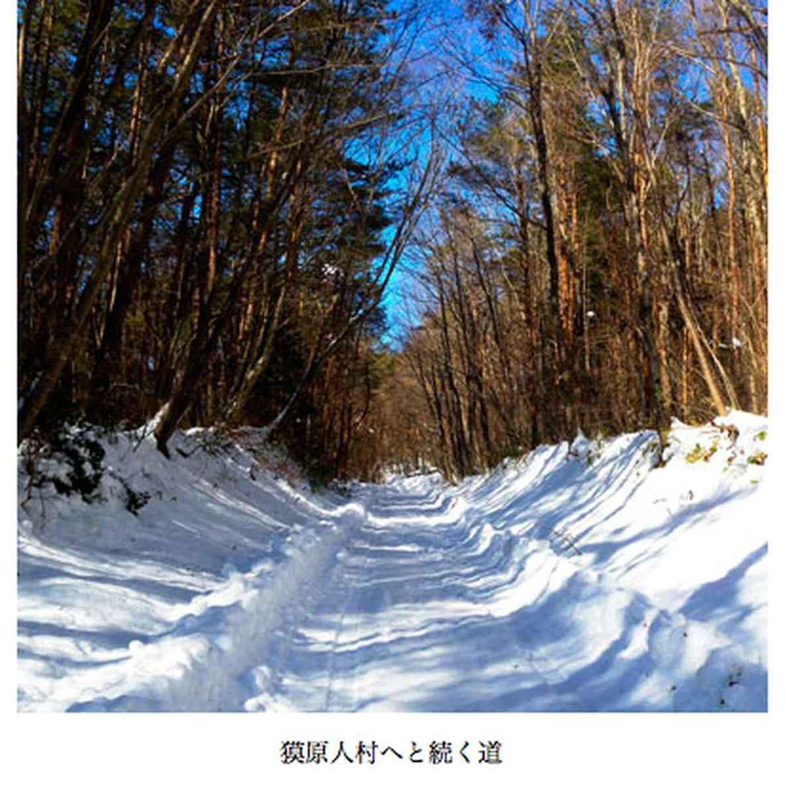
プロメテウスの罠〔７〕 原始村に住む「津波はタブーなんだ」
著 者 朝日新聞（依光隆明）
発行所 朝日新聞社
〒１０４―８０１１ 東京都中央区築地５―３―２
http://www.asahi.com/
発売所 朝日新聞社デジタル本部
〒１０４―８０１１ 東京都中央区築地５―３―２
http://www.asahi.com
２０１２年４月２０日 ＷＥＢ新書版発行
２０１３年１１月３０日 ＥＰＵＢ版発行
©2012 The Asahi Shimbun Company
All rights reserved. No reproduction or republication without written permission.
ISBN 978-4-90712-556-1
〈ご注意〉本コンテンツは、購入者個人の閲覧目的のためのものです。私的範囲を越える利用・譲渡などは禁止します。
〈おことわり〉本コンテンツは２０１２年４月２０日に刊行されたＷＥＢ新書版を底本としました。ＥＰＵＢ版の刊行にともない、体裁や表記を直した場合があります。 企業、組織などの名称、人物の役職、肩書等はいずれも記事初出当時のものです。